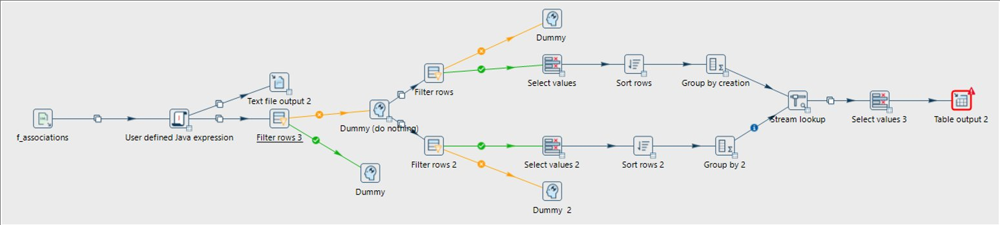

Intégration de Données dans un Datawarehouse — Tissu Associatif Français

🔍 AgrandirCadre du projet & Objectifs
L'approche décisionnelle moderne repose sur la centralisation de sources hétérogènes dans un Datawarehouse. Notre mission : automatiser la chaîne ETL (Extraction, Transformation, Chargement) à partir des données publiques du JOAFE (Journal Officiel des Associations et Fondations d'Entreprise) pour suivre les créations et dissolutions d'associations en France.
Étapes de réalisation
Extraction & parsing XML avec XPath
Les données JOAFE sont fournies au format XML — un format hiérarchique complexe avec des nœuds imbriqués. Maîtrise du langage XPath pour cibler précisément les données utiles : titre de l'association, date de création, objet, département. Cette étape a demandé un vrai travail d'exploration du schéma XML avant de pouvoir écrire les expressions de sélection correctes.
Pipeline de transformation sous Apache HOP
Construction du flux ETL dans Apache HOP : lecture des fichiers XML via l'expression XPath, filtrage des associations actives/dissoutes, nettoyage (gestion des dates manquantes, normalisation des textes, suppression des doublons), application des règles de gestion métier. Le pipeline est visualisé sous forme de workflow graphique, ce qui facilite la compréhension et la maintenance.
Modélisation & chargement dans la base cible
Conception du schéma de base de données relationnelle pour accueillir les données transformées. Dernière étape du pipeline HOP : mapping entre les flux de données et les tables SQL cibles, avec gestion des clés primaires et étrangères pour garantir l'intégrité référentielle.
Ce que j'en retire
XPath : une compétence méconnue mais précieuse
Avant cette SAÉ, je ne savais pas qu'il existait un langage spécifiquement conçu pour interroger du XML. Apprendre XPath dans le contexte d'un vrai dataset gouvernemental (JOAFE) a rendu l'apprentissage concret et immédiatement utile.
💡 Ce que j'ai retenu
Un pipeline ETL fonctionnel ne suffit pas — il faut aussi qu'il soit optimal. Notre première version traitait les données correctement mais trop lentement. Des opérations de filtrage en amont auraient réduit considérablement le volume traité et donc le temps d'exécution. L'optimisation est une étape à part entière du développement.
Ce que ça m'apporte en entreprise
Les pipelines ETL sont au cœur de tout système décisionnel en entreprise. Savoir construire, tester et documenter un pipeline Apache HOP — notamment pour intégrer des sources hétérogènes (XML, CSV) dans un datawarehouse — est une compétence clé pour les postes de Data Engineer ou Data Analyst Senior.
Positionnement par rapport aux ACs
| Apprentissage Critique | Statut | Commentaires |
|---|---|---|
| AC2.1.02 Réaliser le rôle central de l'entrepôt de données dans la chaîne décisionnelle |
A | Conception et alimentation d'un datawarehouse opérationnel à partir de sources publiques brutes, prêt pour l'analyse décisionnelle. |
| AC2.1.03 Identifier et résoudre les problèmes d'intégration de sources hétérogènes |
P | Intégration XML + CSV réussie avec gestion des conflits de types et des données manquantes. Automatisation du rafraîchissement non finalisée par manque de temps. |
| AC2.1.04 Comprendre la nécessité de tester, corriger et documenter un programme |
E | Pipeline fonctionnel mais manquant d'optimisation (temps d'exécution long). La phase de tests et documentation systématique n'a pas été finalisée. |